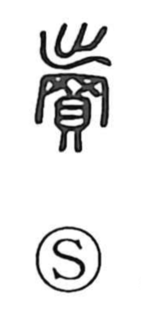

売

Kun: uru, ureru | On: bai
to sell ・ sale
Explanation
The original form is 賣, a compound of 出 and 買. 買 depicts the secret gathering of cowrie shells, the old currency, while 出 shows setting things out. The Shuowen glosses it as spending goods or money. In bronze inscriptions the graph appears as 贖, revealing an early sense of laying out valuables as expiation or compensation. From this act of putting forth goods in payment, the sense broadened to selling, and in modern usage the simplified 売 carries the meaning “to sell,” as in 売買 (buying and selling).